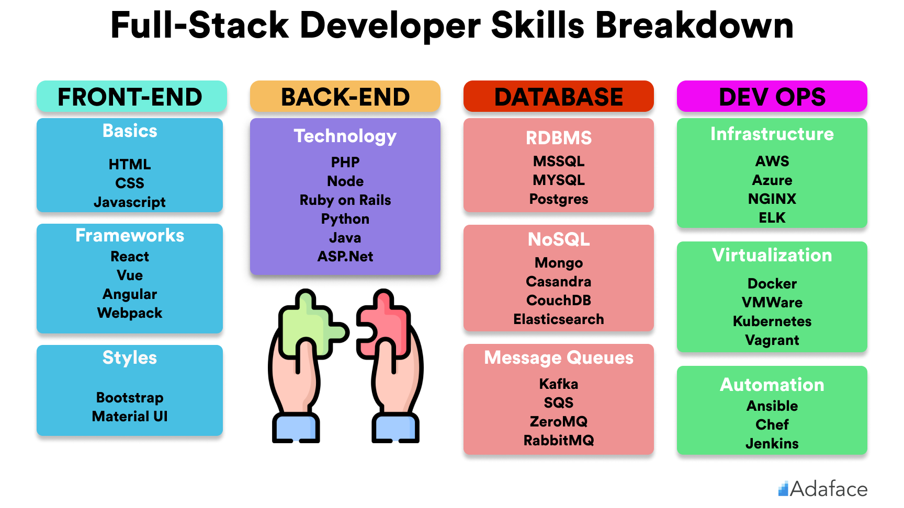
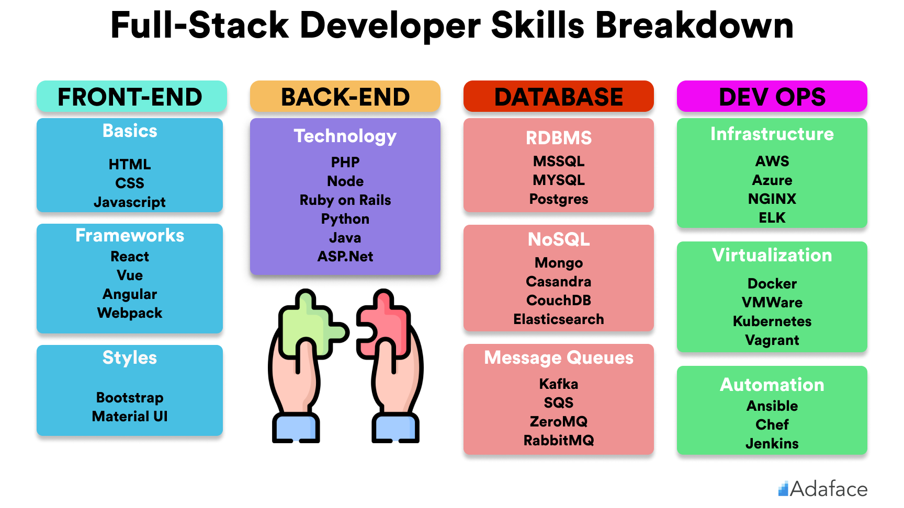

Šta radi full stack developer?
Postoje razne vrste developera koji su fokusirani na ekspertsko rešavanje jedne vrste zadataka.
Ovakvi profesionalci su uskostručni za određenu oblast i ne bave se stvarima van svoje sfere znanja.
S druge strane, full stack developer možda nije vrhunski stručnjak za svaku oblast kojom se bavi,
ali pokriva više oblasti.
Generalno, reč je o IT stručnjacima koji odlično poznaju:
• HTML/CSS;
• JavaScript;
• backend programski jezik;
• baze podataka;
• HTTP.
 
